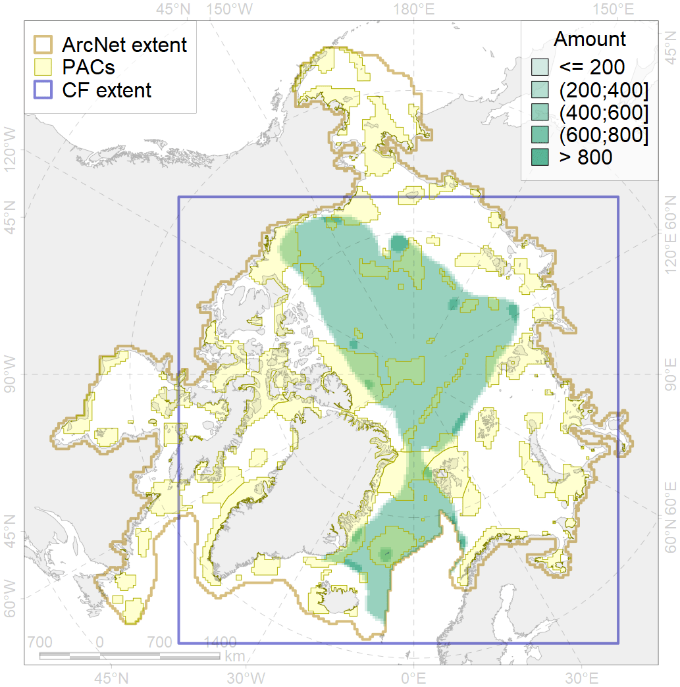
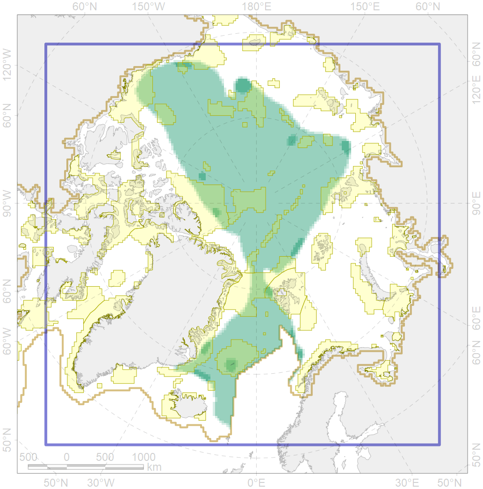

4096

| CF ID | 4096 |
| CF Name | Range of the Glacial eelpout (Lycodes frigidus) |
| Time Period | 1950-2018 |
| Source(s) | The range (Mecklenburg et al. 2018) and actual findings: Collett 1878; Andriashev 1954, 1964; Tzinovskiy 1980 (83 15 N 151 00 E 2505 m); McAllister et al., 1981; Andriashev, 1986; Prouse, McAllister, 1986; Chernova Neyelov, 1995; Mecklenburg et al., 2002; Neyelov, Chernova 2005; Stein et al., 2005; Møller et al., 2010; Hildebrandt et al 2011; Mecklenburg et al., 2018. |
| Seasonality | January-December |
| Depth Horizon | 2000-5000 |
| Methodology | field data, expert opinion |
| Author Name | N. Chernova |
| Notes | |
| Conservation Target Set in the Scenario | 0.06 |
| Conservation Target Achieved in the Scenario | 0.234 (Scenario: 390.6%) |
| PAC ID | Proportion in the PAC | Contribution to ArcNet Target Achievement | PAC’s Contribution to the Achieved Target |
|---|---|---|---|
| 14 | 0.9% | 9.3% | 2.4% |
| 28 | 1.2% | 16.5% | 4.2% |
| 29 | 2.4% | 36.0% | 9.2% |
| 30 | 0.5% | 8.6% | 2.2% |
| 32 | 1.5% | 23.7% | 6.1% |
| 34 | 3.7% | 54.2% | 13.9% |
| 35 | 0.1% | 1.7% | 0.4% |
| 36 | 0.1% | 1.1% | 0.3% |
| 54 | 2.9% | 47.7% | 12.2% |
| 55 | 2.5% | 28.1% | 7.2% |
| 56 | 0.3% | 2.4% | 0.6% |
| 57 | 2.9% | 45.4% | 11.6% |
| 58 | 0.1% | 2.3% | 0.6% |
| 59 | 1.0% | 13.3% | 3.4% |
| 60 | 0.7% | 7.6% | 1.9% |
| 62 | 1.4% | 20.1% | 5.1% |
| 82 | 0.4% | 4.3% | 1.1% |
| 83 | 0.3% | 1.6% | 0.4% |
| inner | 22.8% | 323.8% | 82.9% |
| outer | 77.2% | 66.7% | 17.1% |